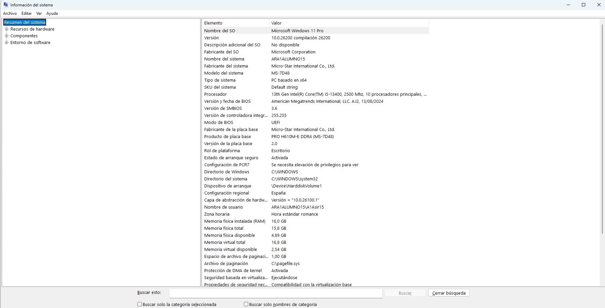

Ficha Técnica del Equipo ARA1ALUMNO15 · Inventario de Aula
Documentación técnica del puesto de trabajo asignado para la
administración de sistemas informáticos en red y virtualización.
Ir a:
Especificaciones del Sistema |
Software y Herramientas |
Rutina de Mantenimiento

Especificaciones del Sistema
Resumen del hardware principal instalado en el equipo de aula:
- Nombre del Equipo
- ARA1ALUMNO15
- Equipo y Placa Base
-
MSI PRO H610M-E DDR4 (MS-7D48) · Chasis Torre Sobremesa
- Procesador (CPU)
-
13th Gen Intel® Core™ i5-13400 (2.50 GHz, 10 núcleos principales / 16
hilos)
- Memoria RAM
-
16,0 GB RAM DDR4 (Suficiente para máquinas virtuales en VirtualBox)
- Arquitectura
- PC basado en x64
- Sistema Operativo Anfitrión
-
Microsoft Windows 11 Pro (64 bits, compilación 26200)
Software y Herramientas Instaladas
Listado de componentes y entornos configurados para las prácticas del
ciclo:
-
Virtualizador: Oracle VirtualBox
(para máquinas virtuales Ubuntu Linux).
-
Entorno de Desarrollo: Visual
Studio Code con extensiones Live Server y Prettier.
-
Terminal y Control de Versiones:
PowerShell de Windows y Git.
-
Modelado de Redes: Cisco Packet
Tracer.
-
Bases de Datos: DBeaver CE.
Rutina de Mantenimiento del Sistema
Pasos secuenciales que ejecuto para mantener el equipo en óptimas
condiciones:
-
Ejecutar Windows Update para aplicar parches de seguridad del sistema
operativo.
- Comprobar actualizaciones de extensiones en Visual Studio Code.
-
Verificar el estado de las máquinas virtuales y liberar espacio en
disco.
-
Realizar copia de seguridad de los repositorios de prácticas mediante
Git push.
Fabricante oficial:
Visitar la página web oficial de MSI
Volver al índice principal del portafolio